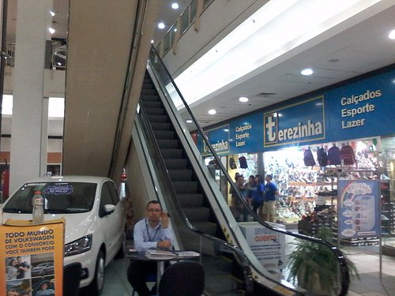
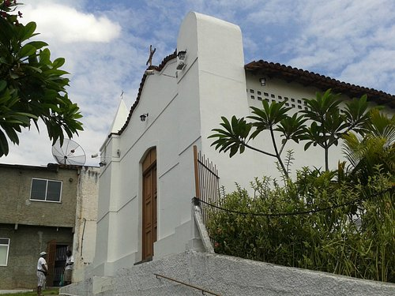
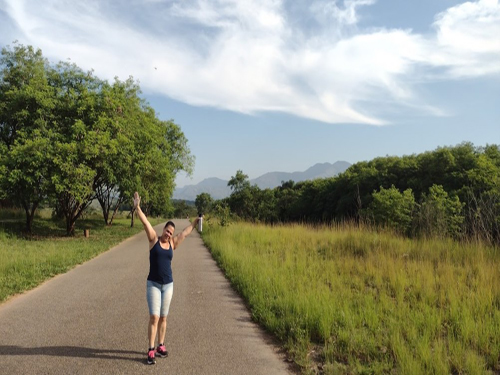
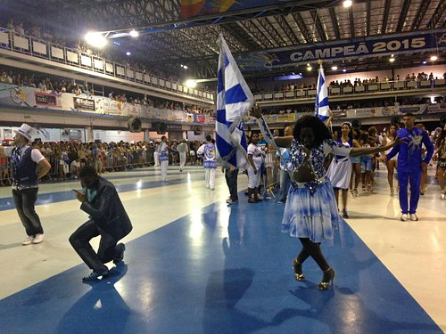

Nilópolis é um município brasileiro da Região Metropolitana da cidade do Rio de Janeiro, no estado do Rio de Janeiro. É um dos treze municípios da Baixada Fluminense. Com uma área total de 19,4 km², é o menor município do estado, sendo o 55º em área urbana, com 9,6 km². Emancipou-se de Nova Iguaçu em 1947, sendo um antigo distrito iguaçuano.
| Dados Demográficos | População de Nilópolis |
|---|---|
| População estimada (2021) | 162.893 pessoas |
| População no último censo (2010) | 157.425 pessoas |
| Densidade demográfica (2010) | 8.177,62 hab/km² |
Um estudo da Embrapa divulgado em outubro de 2017, concluiu que Nilópolis é o município de maior densidade populacio- nal urbana no Brasil, com mais de 16 000 habitantes por quilômetro quadrado. Seu nome é uma homenagem ao político brasileiro, ex-Presidente do Estado do Rio de Janeiro e ex-Presidente do Brasil Nilo Peçanha.
Shopping Nilópolis Square

Um shopping ao lado da estação ferroviária , próximo ao terminal rodoviário e a movimentada Av.
Mirandela, onde o
crescimento surpreende a cada dia. No centro, bem no coração da cidade, fica localizado, inaugurado em 26 de
julho de 2000.São 3 pisos e 150 lojas.
No primeiro pavimento você encontra Lojas Americanas Express e no segundo pavimento Casa & Vídeo como lojas
âncoras.
No terceiro, a praça de alimentação e as 03 salas de cinema. No restante do shopping, a moda, a diversão e o
entretenimento estão presentes no amplo mix de lojas. Body Laser, Cosechas, Espaço laser, Cheirin Bão, O
Boticário e
Casas Pedro, são apenas alguns nomes. Além disso, você ainda tem ao seu dispor caixas eletrônicos Banco 24
Horas.
Na parte do entretenimento o Nilópolis Square Shopping trabalha uma programação de eventos tradicionais na
região,
repleta de atrações para todas as idades.
Esses são apenas alguns dos motivos que fazem do Nilópolis Square o lugar ideal para o seu lazer e
entretenimento.
Capela de São Matheus

Foi fundada em 1637, e construída por escravos e índios. Está localizada na Rua Antônio Cardoso
Leal, 241, no
Centro.
O prédio histórico foi tombado em 2000 na gestão do prefeito José Carlos Cunha. A Capela já serviu de instalação
para uma Clínica na década de 30 e na década de 60 a capela foi utilizada como um núcleo da Legião da Boa
Vontade. O templo foi
construído a mando do então proprietário da região João Álvares Pereira, em 1637, com barro batido, óleo de
baleia e mariscos, essa
mistura era chamada de adobe, as telhas usadas na construção eram moldadas nas coxas dos escravos.
Em 1747 a Capela foi transformada em matriz de São João de Meriti. Passou por quatro restaurações em 1747, 1914,
1936 e 1989. Antes da última obra, o prédio se encontrava em ruínas e invadido por 48 pessoas. A Capela em
estilo barroco, tem dois
salões separados por um arco, isso porque na época da escravatura, os senhores das fazendas ficavam perto do
altar e os escravos atrás
do arco de barro.
Parque Natural Municipal do Gericinó

O Parque Natural do Gericinó fica dentro da Área de Proteção Ambiental (APA) do
Gericinó-Mendanha e foi reivindicado
pelo município de Nilópolis ao Exército brasileiro por mais de 20 anos. Ele está situado no Campo de Instrução
de
Gericinó (CIG), cedido pela Força Armada à Nilópolis em 2009. O Parque guarda espécies das mais variadas
plantas:
de gramíneas como a braquiária, o capim-colonião, o rabo-de-raposa e a lantana, até árvores e arbustos com
predominância
para cambará e maricá, além de exemplares de tamanqueira, quaresminha, açoita-cavalo, embaúba, paujacaré,
jamelão, mamona,
entre outros. Entre as atividades oferecidas, destaque para o safári fotográfico com orientação de professores,
corrida de
orientação, educação ambiental e recreação infantil, além de serem permitidas caminhas e práticas de esportes ao
ar livre.
A Secretaria de Meio Ambiente também faz agendamento com escolas, igrejas, empresas e a comunidade em geral para
plantio de
mudas nativas da mata atlântica no parque. Até 2012, já foram plantadas mais de 12 mil mudas.
Grêmio Recreativo Escola de Samba Beija-Flor de Nilópolis

O município de Nilópolis, na Baixada Fluminense, é o berço da Beija-Flor. A cidade e a escola
de samba trilharam caminhos
semelhantes, uma vez que parte dos governantes de Nilópolis também administrava a agremiação.[29]
Os principais locais de sociabilidade da cidade encontram-se nas imediações da estação de trem: a Avenida
Mirandela
(onde a Beija-Flor realiza seu tradicional desfile pós-carnaval); e do outro lado, a Praça Paulo de Frontin
(antigo palco
das manifestações públicas e do carnaval de rua da cidade).
Apesar do forte comércio e da presença de indústrias, é a escola de samba a maior expressão do município.
Juridicamente
"GRES Beija-Flor", a escola passou a ser chamada formalmente de "Beija-Flor de Nilópolis", tamanha
identificação. Na cidade,
também é comum locais de comércio que levam o nome da escola, sem ligação com a agremiação, apenas em forma de
homenagem.